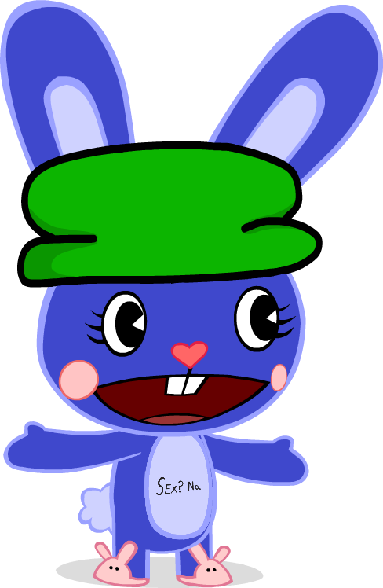
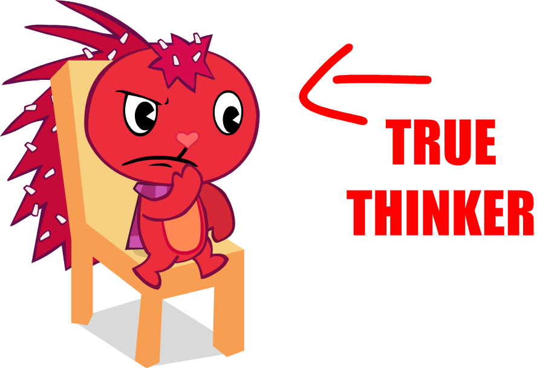
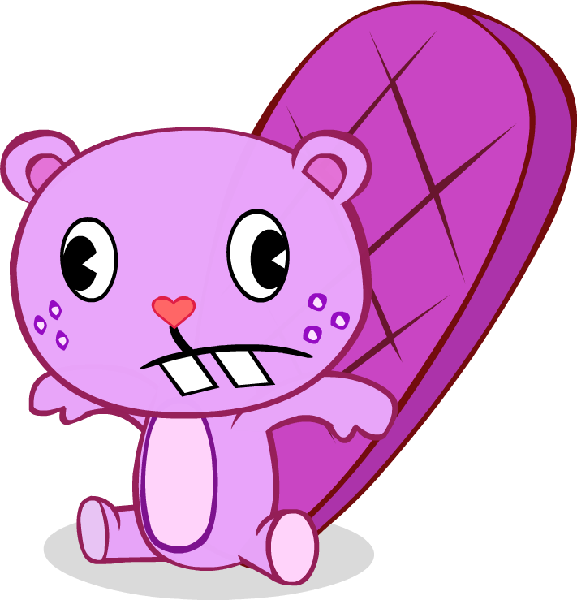
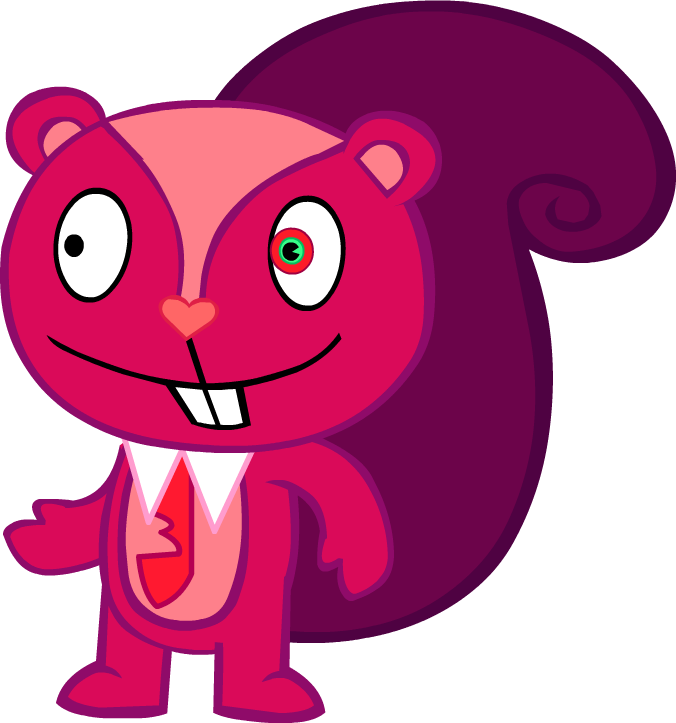
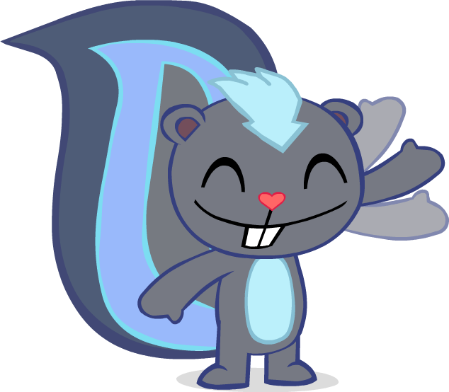
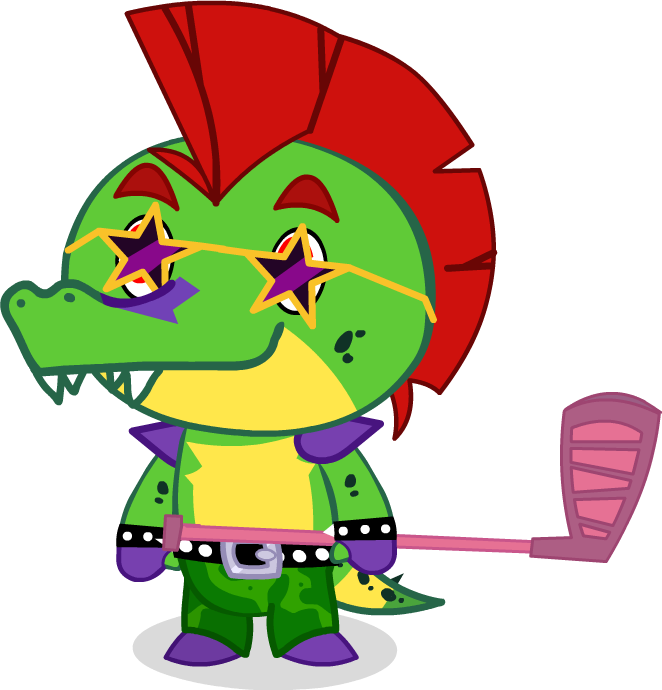
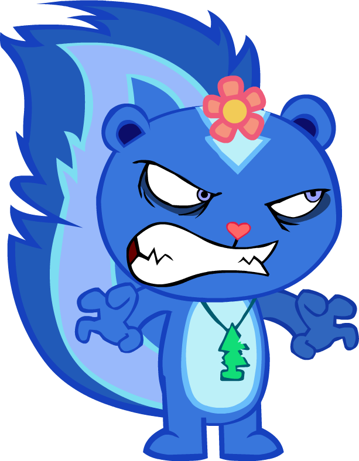

Bambles is the de-facto mascot of HTFW, appearing in the most non-episode media.
She's characterized by her constant attempt to prevent people from dying. Dating Toothy

Flaky's a representation of me! Don't expect them to act anything like HTF Flaky. If you mix them up, something very bad will happen to you.

Biggest loser in the show!!!! Toothy's relatively the same as his HTF counterpart. Dating Bambles.

Simon is HTFW's "villain". If you watch the episodes, he actually doesn't really do anything villain-like.
Maybe he'll be a villain when he feels like it. That ranges from being an "just wants to win" antagonist to "I will end the world and kill everybody" antagonist, by the way.

Finally! A good character.. Harpy is a rebellious 17 year old skunk. Like Bambles, he knows that people will die a ton, he just doesn't care.
We don't talk about it.

No expies allowed!!! Absolutely zero!!! I hate FNAF!!!!
This guy has like two reps in the show, but I'm too lazy to add the other one.....

Petunia is the most interesting case of a character being different. After severe head trauma that never happened, she started to turn evil at the sight of events such as flames. It reminds her of the war she never fought, and triggers the PTSD that she doesn't have.
FUN FACT! Like Cuddles, Flippy, Lammy and Giggles, she is dead. Permanently, that is.